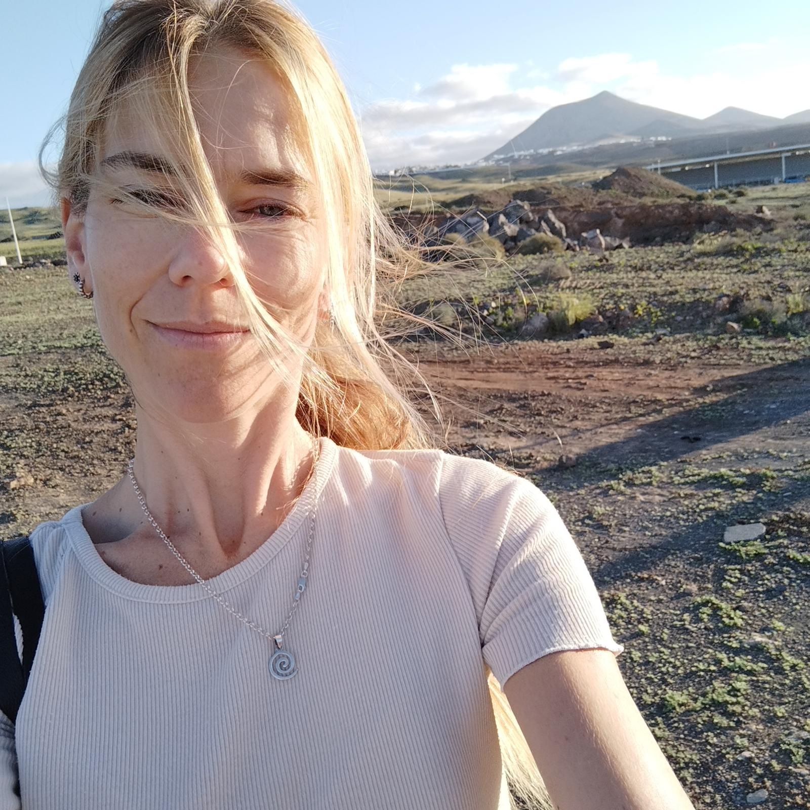

FE NYA
Lo humano del cosmos
The human side of the cosmos
"La astrología, entendida como lenguaje simbólico, permite reconocer las Energías Esenciales y comprender las dinámicas que dan forma a nuestra experiencia humana."
"Astrology, understood as a symbolic language, allows us to recognize Essential Energies and understand the dynamics that shape our human experience."
¿Qué son las Energías Esenciales?
What are Essential Energies?
En FE•NYA llamamos Energías Esenciales a una forma de comprender la carta natal. Nacen del lenguaje simbólico de la astrología y están representadas por los planetas. Cada una expresa una función diferente y, al relacionarse entre sí, da lugar a una manera única de vivir nuestra experiencia.
Reconocer nuestras Energías Esenciales nos ayuda a comprender con mayor claridad aquello que vivimos, los desafíos que se repiten y también las potencialidades que muchas veces pasan desapercibidas.
Desde ahí, la carta natal deja de ser un conjunto de símbolos para convertirse en un mapa que nos ayuda a conocernos con mayor profundidad y a vivir con más conciencia, confianza y coherencia con quienes somos.
Essential Energies are the configurations and bonds established within the natal chart. They arise from the position of the planets, the signs, and the houses, and above all, how they relate to each other. At FE·NYA, this is the working approach: understanding the natal chart as a system of energies in relation.
They are not understood as isolated traits, but as dynamics that organize and take shape in our way of feeling, thinking, and acting. By recognizing them, we begin to see our dynamics more clearly.
From there, the possibility opens up to transform what weighs us down or challenges us, and also to recognize our own potential, to begin inhabiting it from a more conscious place, in coherence with our singularity, with more confidence in ourselves and in greater harmony with our surroundings.
Sobre la fundadora
About the founder
Mi nombre es Graciana Virasoro. Creé FE·NYA como un espacio para bajar el conocimiento del cielo a la tierra y habitarlo. Desde hace más de diez años trabajo con la carta natal como una herramienta de lectura simbólica y comprensión relacional.
Mi recorrido ha estado marcado por el estudio constante, pero, sobre todo, por la práctica sostenida de interpretar cómo la energía se manifiesta en la vida cotidiana. Este camino también nace de mi propia experiencia con la astrología. Durante mucho tiempo, había partes de mí que podía percibir, pero que no terminaba de reconocer como propias. Eso hacía que muchas veces las proyectara, o que aparecieran en forma de incomodidad o a través de situaciones que, de algún modo, me empujaban a verme. El trabajo con mi carta natal fue —y sigue siendo— una forma de darles lugar, de comprenderlas y de empezar a integrarlas.
La carta natal no se agota en una sola lectura: es un mapa al que puedes volver, y que cobra nuevos sentidos según el momento que estés viviendo. Con el tiempo, esa forma de trabajar se fue ordenando en lo que hoy llamo Energías Esenciales: una manera de leer la carta natal poniendo el foco en cómo estas energías se vinculan entre sí y en cómo se expresan en la experiencia, para poder reconocerlas en nuestra vida, como parte de lo que somos.
FE·NYA nació en Lanzarote, una isla que me inspira por su naturaleza volcánica y la inmensidad de su mar. Esa fuerza de la tierra, cruda y esencial, es la que busco transmitir en este enfoque. Desde esta isla continúo investigando y acompañando procesos, convencida de que la astrología ofrece un lenguaje valioso para comprendernos y recuperar la confianza en nuestra propia naturaleza.
My name is Graciana Virasoro. I created FE·NYA as a space to bring the knowledge of the sky down to earth and inhabit it. For over ten years, I have worked with the natal chart as a tool for symbolic reading and relational understanding.
My journey has been marked by constant study, but above all, by the sustained practice of interpreting how energy manifests in daily life. This path also stems from my own experience with astrology. For a long time, there were parts of me that I could perceive, but couldn't quite recognize as my own. This meant that I often projected them, or they appeared in the form of discomfort or through situations that, in some way, pushed me to see myself. Working with my natal chart was—and continues to be—a way to give them space, understand them, and begin to integrate them.
The natal chart is not exhausted in a single reading: it is a map you can return to, taking on new meanings depending on the moment you are living. Over time, this way of working was structured into what I now call Essential Energies: a way of reading the natal chart focusing on how these energies link to each other and how they express themselves in experience, to be able to recognize them in our lives, as part of who we are.
FE·NYA was born in Lanzarote, an island that inspires me with its volcanic nature and the immensity of its sea. That force of the earth, raw and essential, is what I seek to transmit in this approach. From this island, I continue researching and accompanying processes, convinced that astrology offers a valuable language to understand ourselves and regain confidence in our own nature.

"Muchas veces, lo que nos pasa tiene que ver con no reconocer la potencia de lo que nos habita. Al reconocerlo, cambia la forma en que lo vivimos y el lugar desde donde elegimos actuar."
"Often, what happens to us has to do with not recognizing the power of what inhabits us. Upon recognizing it, the way we experience it changes, as does the place from which we choose to act."
Agenda Abierta - Plazas Limitadas Open Agenda - Limited Spots
Propuestas Energías Esenciales
Essential Energies Proposals
"Tres niveles de encuentro para reconocer tus Energías Esenciales."
"Three levels of encounter to recognize your Essential Energies."
1. Tu mapa escrito
1. Your written map
Enfoque: Conocerte a través de tu carta natal
Focus: Know yourself through your natal chart
- ✦ Qué recibes: Una interpretación personalizada en PDF enviada al correo electrónico.What you receive: A personalized interpretation in PDF sent to your email.
A TU PROPIO RITMO
DOCUMENTO DIGITAL
AT YOUR OWN PACE
DIGITAL DOCUMENT
2. Tu mapa escrito + sesión online
2. Written map + online session
Enfoque: Comprender tu carta natal y tu momento actual
Focus: Understand your natal chart and current moment
- ✦ Qué recibes: Tu mapa escrito personalizado (PDF) y una sesión online individual de 60 min.What you receive: Personalized written map (PDF) and a 60-minute individual online session.
MAPA PDF +
SESIÓN 60 MIN ONLINE
PDF MAP +
60M SESSION ONLINE
3. El proceso
3. The process
Enfoque: Comprender tu carta natal como un sistema vivo, en relación con lo que estás viviendo.
Focus: Understand your natal chart as a living system, in relation to what you are experiencing.
- ✦ Qué recibes: Tu mapa escrito personalizado (PDF) y 3 sesiones online individuales de 60 minutos.What you receive: Your personalized written map (PDF) and 3 individual 60-minute online sessions.
Nota sobre tu recorridoNote on your journey
El Mapa Escrito es una forma de empezar. Una primera lectura para comenzar a reconocerte, a tu ritmo, y a la que puedes volver con el tiempo.
✦
La sesión online permite trabajar esa lectura en relación con lo que estás viviendo hoy, ponerlo en palabras y empezar a integrarlo.
✦
El proceso propone un recorrido más sostenido, donde ese trabajo se profundiza en el tiempo.
✦
Puedes comenzar por donde lo necesites. El recorrido es a tu ritmo.
¿Ya trabajamos juntos?Have we worked together?
Si ya hiciste tu mapa o el proceso y sientes que quieres seguir profundizando en lo que se abrió, podemos darle continuidad al trabajo.
Lo vemos y lo vamos ajustando según lo que necesites en cada momento.
If you have already done your map or the process and feel that you want to continue deepening, we can give continuity to the work.
Experiencia a medidaTailor-made Experience
Sesiones Privadas y Grupos
Private Sessions & Groups
Pensado para parejas, familias, amigos/as, comunidades y personas que quieren vivir y conocer más sobre astrología en su propio entorno o retiro.
Experiencias diseñadas a medida para la dinámica de cada grupo.
Consultar disponibilidadCheck availabilityCómo solicitar tu lectura
How to request your reading
Para asegurar la dedicación que cada mapa requiere, trabajo con cupos limitados cada mes. El proceso es simple:
EscríbemeWrite me
Toca el botón de abajo para consultar disponibilidad por WhatsApp.
CoordinamosWe coordinate
Vemos qué propuesta se adapta mejor a tu momento y agendamos tu lugar.
Tus datosYour details
Te solicitaré tu fecha, hora y lugar de nacimiento para comenzar el estudio de tus Energías Esenciales.